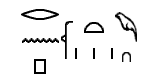
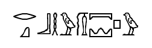
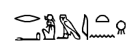
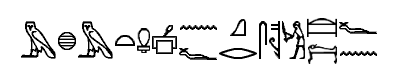
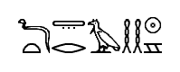
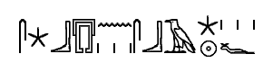

Dear Deitrich,
I've been studying the ancient ring for over five years, yet it feels as if I haven't made any progress. The only significant achievement since its discovery has been translating the hieroglyphs on the cover stone.






The text mentions Ra - the god of the Sun - burying his "doorway to heaven" long ago. Therefore, the ring's name must be "Doorway to Heaven."
So they called it "Doorway to Heaven," and we call it "Door to Heaven." Close enough, I suppose. I guess our translation is a bit more precise - half a century later.
Unfortunately, we still cannot decipher the other set of symbols. The hieroglyphic text contains two names: Ra and "Doorway to Heaven". We attempted to match them to the name in the cover stone's cartouche, but without success.
I know this is an important discovery, but without progress, it remains just an "unknown artifact" - something to hang on a wall and speculate about. What's worse, securing access to advanced equipment or collaborating with respected colleagues is becoming nearly impossible as our funding dries up.
My daughter Catherine and I have been living in the same warehouse where we store all the artifacts. To help with our financial situation, she even took her first part-time job - cataloging items at the Cairo Museum. I've also been picking up odd jobs to bring in extra money. Just last week, I translated some Hebrew inscriptions for a French archeologist.
Must have been Rene Belloq himself.
A few months after moving into this warehouse, I had a dream. In the dream, I was walking through the warehouse at night, as I sometimes do when I can't sleep. Suddenly, the ring began shaking and glowing, and a man jumped through it. He did a few rolls on the ground, looked at me, and then disappeared behind some crates. The dream felt so real and vivid that I wouldn't have thought it was a dream if it hadn't been so bizarre.
Cameron Mitchell, the time traveler from SG: Continuum.
I cannot bear the thought of losing the chance to study this ring - it is my life's work. It is precious to me. That's why I'm reaching out to you.
But this ring with its 6.7 meters diameter does not fit in any filthy pocketses.
You mentioned that the German government recently established the Ahnenerbe Institute, and that they're actively seeking ancient artifacts. While I deeply disagree with the path my fatherland has taken, this could be the only way to secure the money I need to continue my research.
I no longer have any contacts in Germany - except for you. Could you try to arrange funding through the new institute? If you help with the paperwork, I'll make sure you receive your share. We could even propose a hypothesis about the Aryan race occupying Egypt before the Egyptian culture, if that's what it takes to persuade them.
I'm desperate, and I trust you to understand why.
With kindest regards, Paul Langford
Ahnenerbe - the Ancestral Heritage organization. Those were dark days filled with desperate actions.
Ending a war is far more complex than it seems. It might appear straightforward - one side wins, the other loses and pays reparations. But even in defeat, the losing side remains: its people, economy, and society still exist, often scarred by war's aftermath. And a peace built on perceived injustice cannot endure. If the consequences of defeat feel unfair or punitive, resentment festers, and the foundations of lasting peace crumble.
The aftermath of World War I (called just "the Great War" by that time) left Germany deeply humiliated by the Treaty of Versailles. It was inevitable that someone - perhaps an artist, attuned to the emotions of the people - would emerge to restore national pride. Yet, rather than fostering self-love, nationalism took a darker turn: fueling hatred towards others, racism, and the rise of Nazism.
Adolf Hitler rose to power in the early 1930s by exploiting Germany's economic despair after the Great War and the Great Depression. Appointed Chancellor in 1933, he used propaganda, legal maneuvers, and violent suppression of opponents to consolidate absolute control. Central to Nazi ideology was the myth of the Aryan "master race" (and Germans being descendants of Aryans), which Hitler promoted to justify German dominance, territorial expansion, and the persecution of nations deemed "inferior." To lend pseudoscientific credibility to these racial theories, the SS founded the Ahnenerbe in 1935, a research organization that conducted global expeditions to "prove" Aryan supremacy through archaeology and history, though its findings were largely fabricated or distorted for propaganda purposes.
Anyway, I'm not writing any more summaries or access-restriction recommendations for now - until I find out what is going on here. Otherwise, I might also end up rewriting all of them later.
steemit.com - @laylahsophia - EGYPTOLOGY: The Perception of Egypt in Movies, Part# 1 - 'In which Museum is the Stargate on Display?'
YouTube - EgyptologyLessons - Stargate Movie Hieroglyphs - Translation